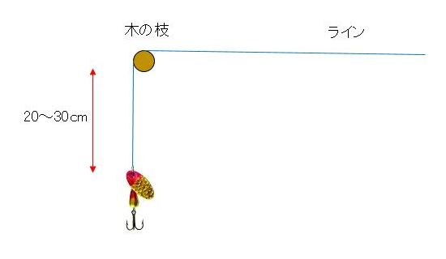
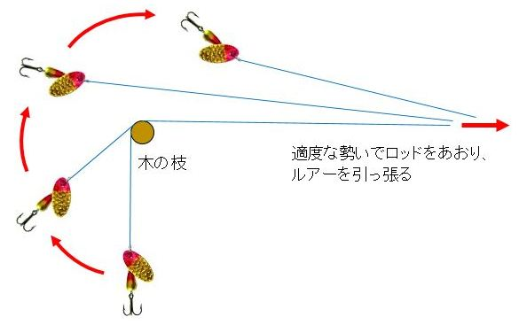
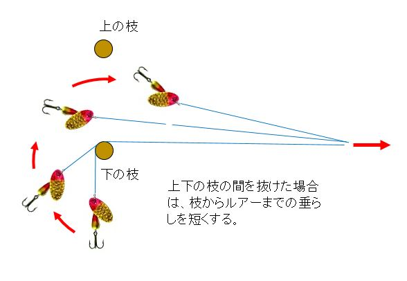

ティップス
釣りの最中に 木の枝の上にルアーを通してしまった時の外し方
シチュエーション
よくある話ですが（作者の場合.....）、ルアーを対岸の木の枝の向こうにキャストしてしまうことがあります。そんな時には、以下の方法でうまく回収できることがあります。
外し方
- 慌ててむやみにルアーを引っ張らず、ゆっくり慎重にリールを巻いて、ルアーを枝に寄せてくる。
- ルアーが枝から20～30cmくらい下に垂れるまでラインをゆっくりと巻き上げる。

- 早すぎず、遅すぎず、中くらいの勢いでロッドをあおり、ラインを引っ張る。
- 引っ張られたルアーが、遠心力の作用で回転し、枝から離れるように動き、枝にフックが刺さることなくこちらへ戻ってくる。

- ロッドをあおるスピードが緩いとフックが枝に刺さってしまう。
スピードが速すぎると、遠心力の作用が働かず、やはりフックが枝に刺さる。 - 数本の枝の向こうへ投げ込んだ時には、落ち着いて上記の操作を繰り返し、１本ずつ枝をクリアーすると無事回収できる。
- 平行する上下の枝の間に投げ込んだ時には、下の枝からのルアーの垂らしを短くし、反動で回転するルアーの半径を小さくして上の枝をクリアーする。

- 一連の操作でラインに傷が出来るので、回収後に、ルアーから１メートルくらいのラインを切って、新たに結び直すこと。
シングルフックだと、藪の中や葦の中へルアーを入れてしまった場合に回収できる確率が非常に高くなります。シングルフックは魚に与えるダメージが少ないのは当然ですが、財布に与えるダメージも減少させてくれます。
スピナーの画像は www.panthermartin.com より引用
2021/02/27
ティップス 目次へ
サイトマップ
ホームへ
お問い合わせ